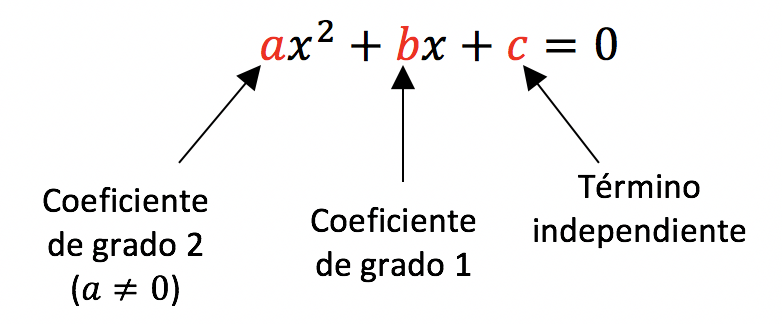

Ecuaciones de segundo grado
Una ecuación de segundo grado es una igualdad algebraica que se verifica para algunos valores de la incógnita, siendo 2 el grado más alto al que se eleva. Su expresión general es:

La existencia de una fórmula general capaz de resolver cualquier ecuación de segundo grado, no puede de ninguna manera ser motivo para que todas las ecuaciones de segundo grado se resuelvan con ella. Tendremos la oportunidad de practicar distintos procedimientos para resolver este tipo de ecuaciones.